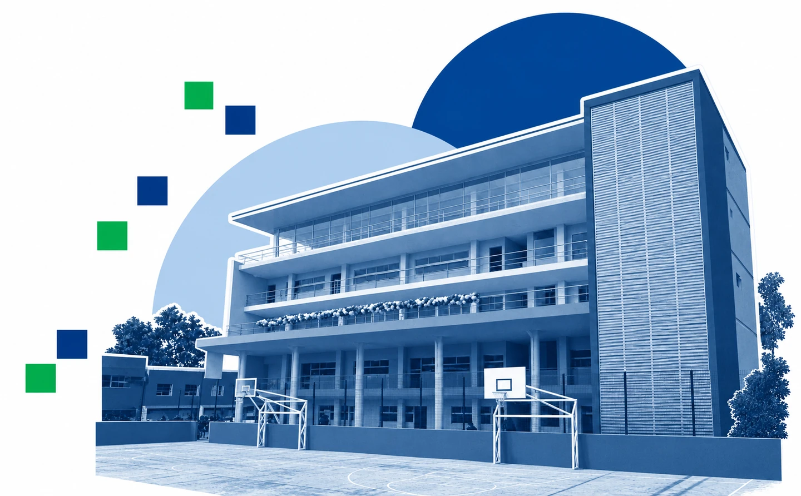
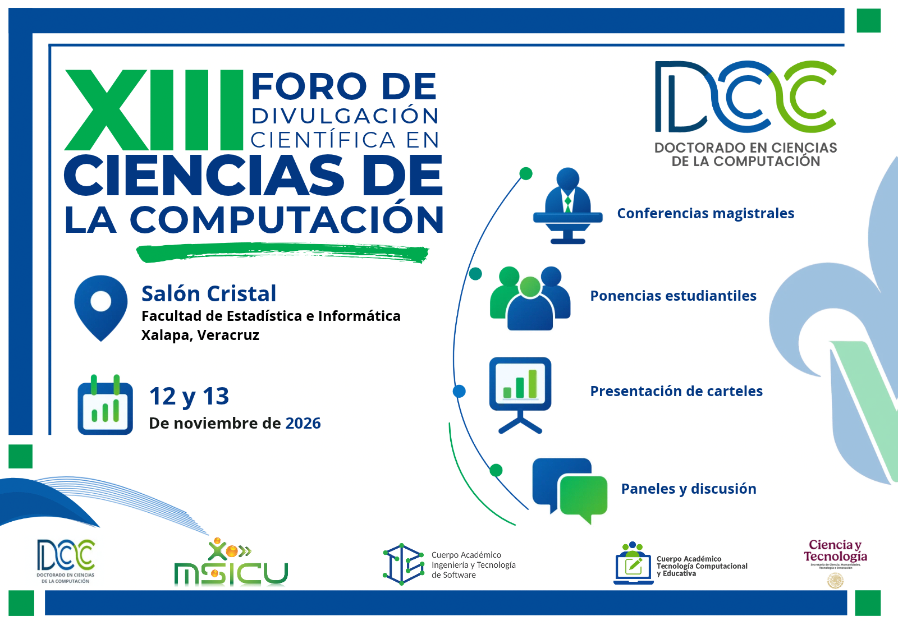
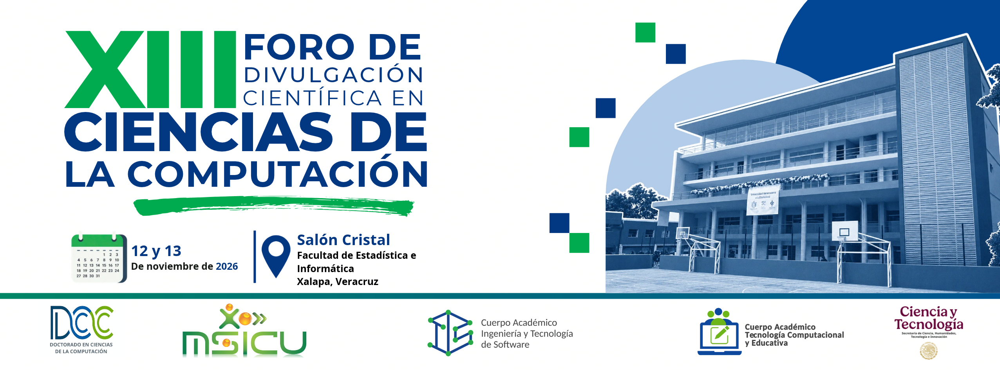

Universidad Veracruzana · Doctorado en Ciencias de la Computación
XIII Foro de divulgación científica en ciencias de la computación
y
Salón Cristal · Facultad de Estadística e Informática
Xalapa, Veracruz

¿Qué encontrarás?
Conferencias magistrales, ponencias estudiantiles, presentación de carteles y un panel de divulgación de la ciencia.
- Aplicaciones de la inteligencia artificial
- Interacción humano-computadora, inclusión y accesibilidad
- Ingeniería de software y visualización de información
- Colaboración por computadora
Programa
Todas las actividades se realizan en el Salón Cristal. Horarios de Xalapa.
Jueves 12 de noviembre
No hay actividades que coincidan con tu búsqueda en este día. Prueba otro nombre o consulta el otro día.
Programa sujeto a cambios. Los títulos de las conferencias magistrales y los participantes del panel están por confirmar.
Sede y fechas
Salón Cristal
Facultad de Estadística e Informática
Universidad Veracruzana
Xalapa, Veracruz
Jueves 12 y viernes 13 de noviembre
La inauguración del jueves comienza a las 09:10 h.
El viernes inicia con la conferencia magistral a las 09:10 h.
Si cambia el programa, vuelve a descargar el calendario.
Ayúdanos a difundir
Descarga los materiales del foro y compártelos en tus grupos y redes.




También puedes descargar el cartel vertical en PDF y el programa completo.